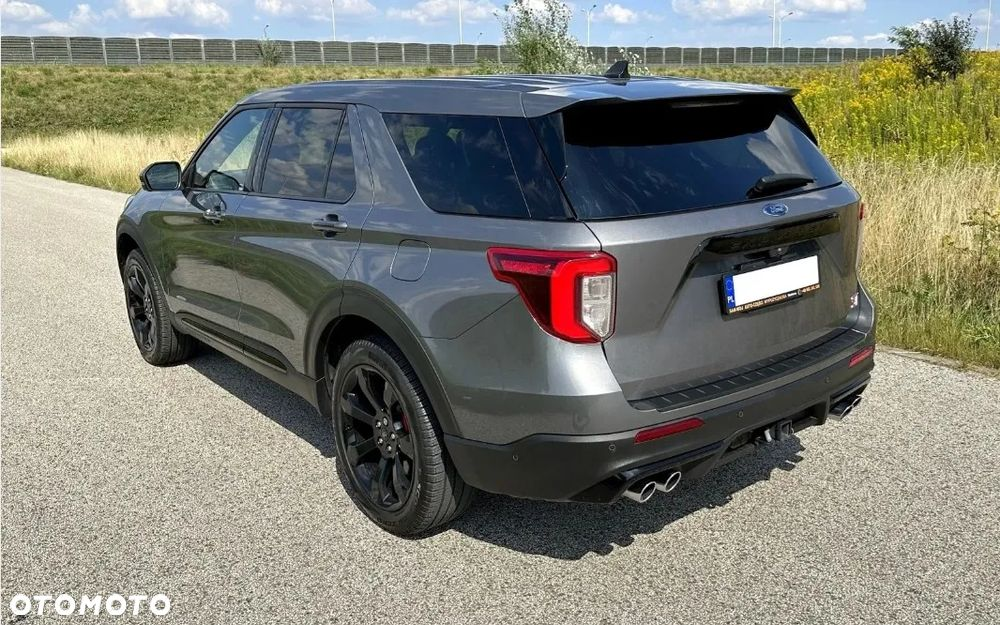

Ford EXPLORER ST-LINE 400KM 4x4
błąd w wyszukiwarce otomoto VIN - jest to zwykła benzynowa wersja 3.0 ecoboost 400KM
Samochód po pełnej konwersja na wersje europejską, radio , nawigacja, licznik, światła przód i tył, dołożone światło przeciwmgłowe tylne, w dobrym stanie technicznym i wizualnym, ważny przegląd i OC, niski przebieg, 2 kluczyki. Wyposażenie i historia pojazdu w SZCZEGÓŁACH OTOMOTO.
Importowany z USA w marcu 2022r. przy przebiegu 130 mil, około 215km, praktycznie nowy, 1 rejestracja w USA 22.04.2021r.
Sprzedający osoba prywatna, tylko SPRZEDAŻ, bez żadnych zamian na inny pojazd itp.
